Chapter 2 비모수적 생존함수 추정
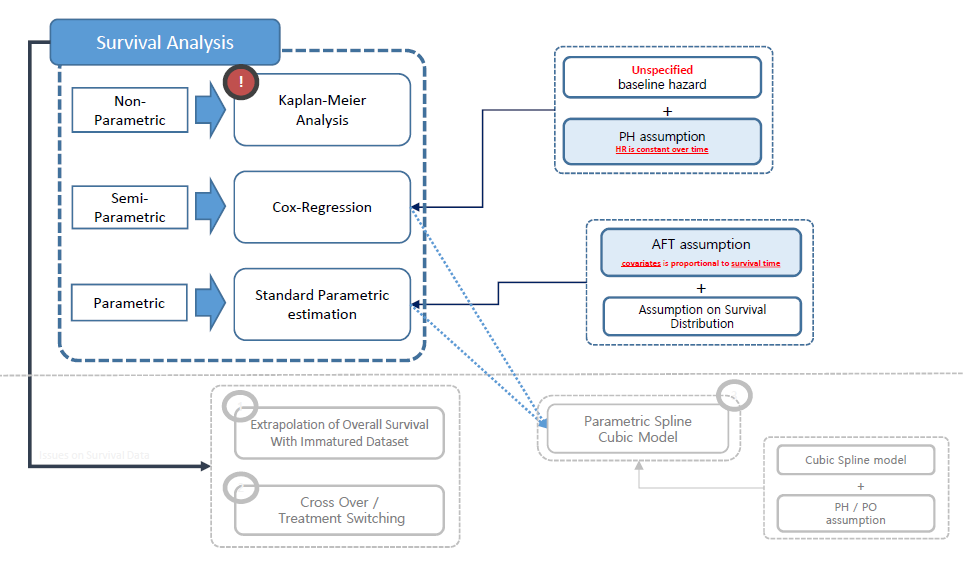
생존시간의 분포를 특정하지 않는 경우 비모수적 방법(nonparameteric method)으로 생존 함수 추정 가능
중도절단이 없는 경우, 생존시간 \(x_1, \ldots, x_n\)을 순서대로 배열한 것을 \(t_1<t_2<\cdots<t_n\)이라 하면 경험적 분포함수 (empirical distribution function)
\[ S(t_i) = P(T>t_i) = \text{생존시간이 } t_i \text{이상인 관측치수} / \text{총 관측치수} = 1- t_i \text{까지의 사망자수} / n \]
경험적 분포함수를 중단절단자료가 있는 경우로 확장한 방법이 생명표(life table)를 이용한 방법과 누적한계추정법(product-limit method)
생명표 방법은 시간의 단위로 묶어서 생존함수를 추정하며, 누적한계추정법은 환자 개개인의 생존시간을 관측하여 각 시점에서의 생존함수를 추정
2.1 누적한계추정법
- 생존함수를 추정하는 대표적인 방법 중 하나로 연구자의 이름을 따서 카플란-마미어(Kaplan-Meier) 추정법이라고도 함
Notation
Sample of \(n_0\) from \(F\) \[ 0=t_0<t_1<t_2<\cdots <t_k<t_{k+1}=\infty \] are failure time (uncensored)
\(d_j\) subjects fail at \(t_j\)
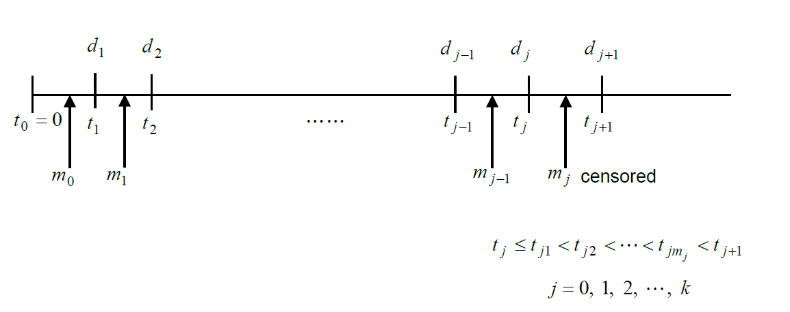
- # at risk of failure at time just before \(t_j\) \[ n_j=\sum_{i=j}^k(m_i+d_i) \]
Assume
The censoring time \(t_{jl}\) tells us only that the corresponding failure time is \(>t_{jl}\) (i.e., the contribution to the likelihood of a survival time censored at \(t_{jl}\) is \(P(T>t_{jl})=S(t_{jl}+0))\)
The likelihood of \(S\) (survival function) is
\[ L(S)=\prod_{j=0}^k \bigg \{[S(t_j)-S(t_j+0)]^{d_{j}}\prod_{l=1}^{m_j}S(t_{jl}+0)\bigg\} \]
\(S(t_j)-S(t_j+0)\): the probability of failure at time \(t_j\)
\(S(t_{jl}+0)=Pr(T>t_{jl})\): the contribution to the likelihood of a survival time censored at \(t_{jl}\)
MLE of \(S\) is \(\hat{S}\) such that \(L(\hat{S})\) is max
The maximum likelihood estimate \(\hat{S}\) of \(F\) will maximized \(L(\hat{S})\)
Clearly we want \(S(t_j)-S(t_j+0)>0\) (i.e., jump at \(t_j\)) (*) otherwise \(L(\hat{S})=0\)
Any \(\hat{F}\) satisfies (*), \(L(\hat{F})\) is maximized by taking
\[ \hat{S}(t_{jl}+0)=\hat{S}(t_j+0)=\hat{S}(t_{j+1}) \]
jump on only at time \(t_{j+1}\) not censored time \(\rightarrow \hat{S}(t_{0l})=1\))
- MLE \(\hat{S}\) is a discrete survival function with jump points \(t_j\)
Proof
- Let \(\hat{\lambda}\) be the hazard function for \(\hat{S}\)
\[ 1-\hat{\lambda}_j = \frac{\hat{S}(t_{j+1})}{\hat{S}(t_{j})}=\frac{\hat{S}(t_j+0)}{\hat{S}(t_{j})} \]
\(\lambda(t)=Pr(T=t|T\ge t)\)
\[ \begin{aligned} 1-\lambda(t)&=1-Pr(T=t|T\ge t)\\ &=Pr(T\ge t+1|T \ge t)\\ &=\frac{S(t+0)}{S(t)} \end{aligned} \]
\[ \hat{\lambda}_j = \frac{\hat{S}(t_{j})-\hat{S}(t_j+0)}{\hat{S}(t_{j})}=\frac{\hat{f}(t_j)}{\hat{S}(t_{j})} \]
\(\hat{S}(t_{j})-\hat{S}(t_j+0)=\hat{\lambda}_j\hat{F}(t_j)=\hat{\lambda}_j\prod_{i<j}(1-\hat{\lambda}_i)\), \(\hat{S}(t_{j+1})=\prod_{i=1}^j(1-\hat{\lambda}_i)\)
Now plug in (*) into \(L(\hat{F})\) and expand completely
\[ \begin{aligned} L(\hat{S})&=\prod_{j=0}^k \bigg \{[\hat{S}(t_j)-\hat{S}(t_j+0)]^{d_{j}}\prod_{l=1}^{m_j}\hat{S}(t_{jl}+0)\bigg\} \\ &=\prod_{j=0}^k \bigg \{[\hat{S}(t_j)-\hat{S}(t_j+0)]^{d_{j}}[\hat{S}(t_{j}+0)]^{m_j}\bigg\} \\ &=\prod_{j=1}^k \bigg \{[\hat{\lambda}_j\hat{S}(t_j)]^{d_{j}}[(1-\hat{\lambda})\hat{S}(t_{j}+0)]^{m_j}\bigg\} \\ &=\prod_{j=1}^k \bigg \{\hat{\lambda}_j^{d_j}(1-\hat{\lambda})^{m_j}\hat{S}(t_j)^{d_{j}+m_j}\bigg\} \\ &=\prod_{j=1}^k \bigg \{\hat{\lambda}_j^{d_j}(1-\hat{\lambda})^{m_j}\prod_{i=0}^{j-1}(1-\hat{\lambda}_j)^{d_{j}+m_j}\bigg\} \\ & \,\,\,\,\,\,\,\,\,\,\,\,\,\,\,\, \vdots \\ &=\prod_{j=1}^k \hat{\lambda}_j^{d_j}(1-\hat{\lambda})^{n_j - d_j} \end{aligned} \]
- What \(\hat{\lambda}_j\) that maximizes \(L(\hat{F})\) is maximized when
\[ \hat{\lambda}_j = \frac{d_j}{n_j} \]
Maximum likelihood estimate of \(S\) is \(\hat{S}=\prod_{j, t_j<t}(1-\hat{\lambda}_j)\)
Kaplan-Meier estimator or Product limit estimator of survival function
\[ \hat{S}=\prod_{j, t_j<t}(1-\hat{\lambda}_j)=\prod_{j, t_j<t}(1-\frac{d_j}{n_j}) \]
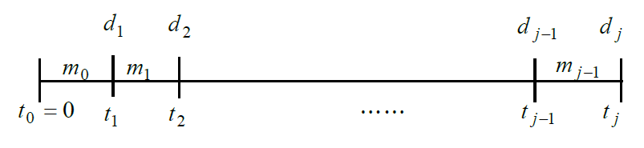
\[ \begin{aligned} S(t)&=Pr(T\ge t) \\ &= Pr(T\ge t|T\ge t_{j-1})\cdot Pr(T\ge t_{j-1}) \\ &= \frac{n_j-d_j}{n_j}\cdot Pr(T\ge t_{j-1})\\ &= \prod_{j, t_j<t}\bigg(1-\frac{d_j}{n_j}\bigg) \end{aligned} \]
- Conditional probability
\[ \frac{n_j-d_j}{n_j}=\frac{\#\,\,\, of\,\,\, individuals \,\,\, at\,\,\, risk\,\,\, at\,\,\, time\,\,\, t_{(j)}}{\#\,\,\, of\,\,\, individuals \,\,\, at\,\,\, risk\,\,\, at\,\,\, time\,\,\, t_{(j-1)}} \]
We get
\[ d_j \sim bin(n_j, \hat{\lambda}_j) \]
where \(\hat{\lambda}_j=\frac{d_j}{n_j}\)
Note
- If there is no censoring and no ties in the data (i.e., \(n_i=n_{i-1}-d_{i-1}\))
\[ \hat{S}(t)=\frac{\#(t_i\ge t)}{n_0} \]
empirical survival function (step function)
- Setting - no censoring and no ties (\(n_i=n_{i-1}-d_{i-1}\))
\[ \hat{S}(t)=\frac{n_0-d_0}{n_0} \cdot \frac{n_1-d_1}{n_1} \cdot \, \cdots \, \cdot \frac{n_j-d_j}{n_j}=\frac{n_j-d_j}{n_0} \]
\(\hat{\lambda}_j=\frac{d_j}{n_j}\) is equivalent to
\[ \hat{\lambda}_j=Pr(T=t_j|T\ge t_j)=\frac{\#\,\,\,of\,\,\, failure\,\,\, at\,\,\, t_j}{\#\,\,\,of\,\,\, risk\,\,\, at\,\,\, t_j^-} \]
KME is a discrete measure giving mass only to the uncensored observations
KME is step function
- It jumps at death times
- No changes at censored observations
Censoring observations do not contribute to compute \(\hat{\lambda}_j\)
For breaking ties
If a censored observations is tied with an uncensored observation, we consider the censored observations > the uncensored observations
If two uncensored observations or two censored observations are tied then we break them arbitrary by an infinitesimal distance
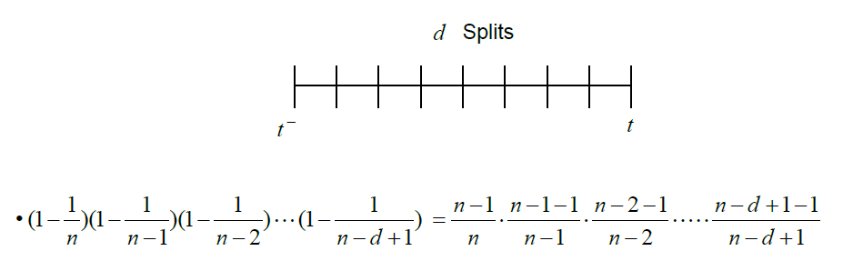
생존시간 또는 중도절단시간 \(x_1, \ldots, x_n\)을 순서대로 배열한 것을 \(t_1<t_2<\cdots<t_n\)이라 하고 \(\delta_i\)를 생존시간 \(t_i\)의 중도절단여부를 표현. 이때 중도절단인 경우 \(\delta_i=0\), 그렇지 않은 경우 \(\delta_i=1\)
시점 \(t_i\)에서 위험에 노출된 인원수, 즉 \(t_i\) 바로 직전까지 중도절단되지 않고 생존해 있던 인원수를 \(n_i\)라고 하고 사망한 사람의 수를 \(d_i\)라고 했을 때 생존함수 \(S(t)\)의 누적한계추정량은
\[ \hat{S}(t)=\prod_{t_i\le t} (1-d_i/n_i)^{\delta_i} \]
누정한계추정량은 중도절단시간에서는 변하지 않고 사망이 관측되는 시점 \(x_i\)에서 \((n_i-d_i)/n_i\)를 곱해준 만큼씩 감소하는 계단함수
중도절단의 효과는 각 단계에서의 크기 \(n_i\)의 값에서 나타남
사망시간과 중도절단시간이 동일한 경우에는 사망이 중도절단보다 먼저 관측되었다고 판단
마지막 생존시간 \(t_n\)이 중도절단된 경우에는 \(t_n\) 이상의 기간에 대해서는 누적한계추정값을 정의하지 않음
2.1.1 분산 추정량 - Greenwood’s estimate of \(Var(\hat{S}(t))\)
\[ \hat{Var}(\hat{S}(t))=\hat{S}^2(t)\sum_{i:t_i\le t} \frac{d_i}{n_i(n_i-d_i)} \]
2.1.1.1 Delta (\(\delta\)) method
Suppose \(\hat{\theta}\) is an estimator of \(\theta\)
\(g(\theta)\) is the parameter of interest
Assume \(g(\cdot)\) is a differentiable function
\(g(\hat{\theta})\) is an estimator of \(g(\theta)\)
\[ g(\hat{\theta})-g(\theta)=g'(\theta)(\hat{\theta}-\theta)+o(|\hat{\theta}-\theta|) \]
Usually \(\sqrt{n}(\hat\theta -\theta) \rightarrow^d N(0, \sigma^2)\)
So \(Var(g(\hat{\theta})) \approx (g'(\hat{\theta}))^2Var(\hat{\theta})\)
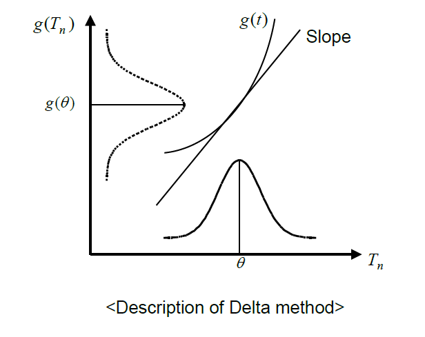
2.1.1.2 Heuristic derivation of Greenwood’s estimate of \(\sigma_{\hat{S}(t)}^2\)
- Under some regularity conditions
\[ \hat{F}(t)=\prod_{j, t_j<t}(1-\frac{d_j}{n_j})\sim AN(F(t),\sigma_{\hat{S}(t)}^2) \]
\(\delta\)-method
Suppose \(T_n \sim AN(\mu, \sigma_n^2)\) with \(\sigma_n \rightarrow 0\)
Let \(g\) be a real-valued function differentiable at \(t=\mu\), with \(g'(\mu)\ne 0\)
Then \(g(T_n)\sim AN(g(\mu), [g'(\mu)]^2\sigma_n^2)\)
\[ \hat{S}(t)=\prod_{j, t_j<t}(1-\hat{\lambda}_j) \]
- \(log\hat{S}(t)=\sum_{j, t_j<t}log(1-\hat{\lambda}_j)\): sum is easier to calculate
\[ Var(log\hat{S}(t))=\sum_{j, t_j<t}Var(log(1-\hat{\lambda}_j))+cov \]
If we assume independence then \(Cov=0\)
\(1-\hat{\lambda}_j\sim AN(1-\lambda_j, \frac{\lambda_j(1-\lambda_j)}{n_j})\)
\[ log(1-\hat{\lambda}_j)\sim AN(log(1-\lambda_j),(-\frac{1}{1-\lambda_j})^2 \frac{\lambda_j(1-\lambda_j)}{n_j}) \]
\[ i.e., \,\,\, log(1-\hat{\lambda}_j)\sim AN(log(1-\lambda_j),(\frac{\lambda_j}{n_j(1-\lambda_j)}) \]
- \(Var(log\hat{S}(t))=\sum_{j, t_j<t}\frac{\lambda_j}{n_j(1-\lambda_j)}\)
\[ \begin{aligned} \hat{Var}(log\hat{S}(t))&=\sum_{j, t_j<t}\frac{\hat\lambda_j}{n_j(1-\hat\lambda_j)} \\ &= \sum_{j, t_j<t}\frac{d_j}{n_j(n_j-d_j)} \end{aligned} \]
- \(\hat{S}(t)=e^{log\hat{S}(t)}\)
\[ \begin{aligned} Var(log\hat{S}(t))&=(e^{log{S}(t)})^2\sum_{j, t_j<t}\frac{\lambda_j}{n_j(1-\lambda_j)} \\ &= (S(t))^2\sum_{j, t_j<t}\frac{\lambda_j}{n_j(1-\lambda_j)} \end{aligned} \]
\(\hat{Var}(\hat{S}(t))=(\hat{S}(t))^2\sum_{j, t_j<t}\frac{\hat{\lambda}_j}{n_j(1-\hat{\lambda}_j)}\)
Greenwood’s Formula (Crowley & Breslow 1974, Annals of Staitsitcs)
\[ \hat{Var}(\hat{S}(t))=(\hat{S}(t))^2\sum_{j, t_j<t}\frac{d_j}{n_j(n_j-d_j)} \]
- \(\hat{S}(t)\sim AN(S(t), \hat{Var}(\hat{S}(t))\) so,
\[ \frac{\hat{S}(t)-S(t)}{\sqrt{Var(\hat{F}(t))}}\rightarrow^d N(0,1) \]
- \(100(1-\alpha)\%\) CI for \(S(t)\)
\[ \hat{S}(t) \pm z_{\alpha/2}\sqrt{\hat{Var}(\hat{S}(t))} \]
Problem: Bounds may be outside \([0,1]\) (\(0<\hat{S}(t)<1\))
누정한계추정량은 일치성(consistency)과 근사적 정규성(asymptotic normality)을 만족하는 등 표본이 클 때 통계적 성질이 우수함
자료 표현법

- Example: Kaplan-Meier estimator for the 6 MP data (\(n=21\))

- Example

2.1.2 R 예제
- autoReg 패키지에 포함되어 있는 anderson 데이터를 사용
- 42명의 백혈병 환자 데이터
- time: week 단위
- status: 재발은 1, 재발하지 않은 경우(중도절단의 경우)는 0
- sex: 성별
- logWBC: 백혈구 숫자의 로그값
- rx: 치료군은 0, 대조군은 1
- 설명의 편의를 위해 이 데이터 중 rx가 0인것만 골라 data라는 데이터 생성
library(autoReg)
data=subset(anderson,rx==0)
head(data)## time status sex logWBC rx
## 1 35 0 1 1.45 0
## 2 34 0 1 1.47 0
## 3 32 0 1 2.20 0
## 4 32 0 1 2.53 0
## 5 25 0 1 1.78 0
## 6 23 1 1 2.57 0- 생존분석은 다른 분석과는 달리 이벤트가 생기지 않은 모든 예에서 정확한 생존기간을 알 수 없기 때문에 모두 중도절단 자료로 취급함. 즉, 연구 종료 시까지 이벤트가 생기지 않고 종료된 경우나 추적실패(follow-up loss) 또는 중도탈락(drop-out)의 경우도 모두 절단된 데이터를 의미
- 이 데이터에서 time은 숫자로 되어 있으나 생존분석을 위해 중도절단된 자료에는 숫자에 ’+’를 붙여 중도절단임을 나타내야 함
library(survival)
data$time## [1] 35 34 32 32 25 23 22 20 19 17 16 13 11 10 10 9 7 6 6 6 6with(data,Surv(time,status))## [1] 35+ 34+ 32+ 32+ 25+ 23 22 20+ 19+ 17+ 16 13 11+ 10+ 10 9+ 7 6+ 6
## [20] 6 6- 평균생존시간(\(\bar{T}\))은 중도절단을 고려하지 않고 생존시간의 평균을 계산함
- 중도절단된 자료는 정확한 생존시간을 알 수 없으므로 실제 생존시간은 평균생존시간보다 길어짐
- 평균위험률(average hazard rate, \(\bar{h}\))은 전체 실패 수를 생존시간의 합계로 나눈 값
- 다음은 anderson 데이터에서 치료군(rx)에 따라 평균생존시간과 평균 위험률을 계산한 값임
library(dplyr)
anderson %>%
group_by(rx) %>%
dplyr::summarize(T=mean(time),h=sum(status)/sum(time))## # A tibble: 2 × 3
## rx T h
## <dbl> <dbl> <dbl>
## 1 0 17.1 0.0251
## 2 1 8.67 0.115치료군(rx==0)에서 평균생존시간이 더 길고 평균위험률이 더 낮은 것을 알 수 있음
survfit함수를 쓰면 생존율을 계산해줌
fit=survfit(Surv(time,status)~1,data=data)
fit## Call: survfit(formula = Surv(time, status) ~ 1, data = data)
##
## n events median 0.95LCL 0.95UCL
## [1,] 21 9 23 16 NA출력결과에서 median survival과 95% 신뢰구간을 알 수 있음
Median survival time은 생존율이 50%인 시간을 의미하며, 각 시기별 생존율은 다음과 같음
summary(fit)## Call: survfit(formula = Surv(time, status) ~ 1, data = data)
##
## time n.risk n.event survival std.err lower 95% CI upper 95% CI
## 6 21 3 0.857 0.0764 0.720 1.000
## 7 17 1 0.807 0.0869 0.653 0.996
## 10 15 1 0.753 0.0963 0.586 0.968
## 13 12 1 0.690 0.1068 0.510 0.935
## 16 11 1 0.627 0.1141 0.439 0.896
## 22 7 1 0.538 0.1282 0.337 0.858
## 23 6 1 0.448 0.1346 0.249 0.807- 각 시기별로 생존율과 생존율의 95% 신뢰구간을 알 수 있음. 생존율의 95% 신뢰구간은 다음과 같이 계산함
\[ \hat{S}(t)\pm 1.96 \times \sqrt{\hat{Var}(\hat{S}(t))} \]
- Mean survival time
unclass(summary(fit))## $n
## [1] 21
##
## $time
## [1] 6 7 10 13 16 22 23
##
## $n.risk
## [1] 21 17 15 12 11 7 6
##
## $n.event
## [1] 3 1 1 1 1 1 1
##
## $n.censor
## [1] 1 0 2 1 0 3 0
##
## $surv
## [1] 0.8571429 0.8067227 0.7529412 0.6901961 0.6274510 0.5378151 0.4481793
##
## $std.err
## [1] 0.07636035 0.08693529 0.09634965 0.10681471 0.11405387 0.12823375 0.13459146
##
## $cumhaz
## [1] 0.1428571 0.2016807 0.2683473 0.3516807 0.4425898 0.5854469 0.7521136
##
## $std.chaz
## [1] 0.08247861 0.10130611 0.12127396 0.14714557 0.17296323 0.22433110 0.27946775
##
## $type
## [1] "right"
##
## $logse
## [1] TRUE
##
## $conf.int
## [1] 0.95
##
## $conf.type
## [1] "log"
##
## $lower
## [1] 0.7198171 0.6531242 0.5859190 0.5096131 0.4393939 0.3370366 0.2487882
##
## $upper
## [1] 1.0000000 0.9964437 0.9675748 0.9347692 0.8959949 0.8582008 0.8073720
##
## $call
## survfit(formula = Surv(time, status) ~ 1, data = data)
##
## $table
## records n.max n.start events rmean se(rmean) median 0.95LCL
## 21.000000 21.000000 21.000000 9.000000 23.287395 2.827468 23.000000 16.000000
## 0.95UCL
## NA
##
## $rmean.endtime
## [1] 35summary(fit)$table## records n.max n.start events rmean se(rmean) median 0.95LCL
## 21.000000 21.000000 21.000000 9.000000 23.287395 2.827468 23.000000 16.000000
## 0.95UCL
## NA생존율을 계산하는 과정을 설명하기 위해 howto 패키지의 howto() 함수를 사용하여 계산과정을 살펴볼 수 있음
howto 패키지는 다음과 같이 install 함
remotes::install_github("cardiomoon/howto")fit=survfit(Surv(time,status)~1,data=data)library(howto)## Registered S3 method overwritten by 'ftExtra':
## method from
## as_flextable.data.frame flextablelibrary(flextable) ## highlight function
howto(fit) %>%
highlight(i=1,j=6,color="yellow") %>%
highlight(i=2,j=c(2,3,5),color="yellow")time | n.risk | n.event | n.censor |
| surv |
|---|---|---|---|---|---|
0 | 21 | 0 | 0 | 1.0000 | |
6 | 21 | 3 | 1 | 1.0000 × (18÷21) | 0.8571 |
7 | 17 | 1 | 0 | 0.8571 × (16÷17) | 0.8067 |
10 | 15 | 1 | 2 | 0.8067 × (14÷15) | 0.7529 |
13 | 12 | 1 | 1 | 0.7529 × (11÷12) | 0.6902 |
16 | 11 | 1 | 0 | 0.6902 × (10÷11) | 0.6275 |
22 | 7 | 1 | 3 | 0.6275 × (6÷7) | 0.5378 |
23 | 6 | 1 | 0 | 0.5378 × (5÷6) | 0.4482 |
- 연구 시작 지점에서 대상환자수(number at risk, n.risk)는 21명이었고 아직 이벤트가 발생하지 않았으므로(n.event=0) 생존율은 21/21=1. 6주째에 3명에게 이벤트가 발생하여 6주째의 n.risk는 21명이고 이 중 이벤트가 발생한 3명을 제외하고 18명이 생존하였음. 따라서 6주째 생존율은 다음과 같음
\[ \hat{S}(6)=1 \times \frac{(21-3)}{21} =1\times \frac{18}{21} =0.8571 \]
- 7주째의 number at risk는 6주째에 3명 실패(이벤트 발생), 1명 중도절단되어 17명이고 생존율은 \(0.8571 \times (16/17)=0.8067\)로 추정
\[ \hat{S}(7)=1\times \frac{18}{21}\times \frac{16}{17} \]
- 13주째의 생존율
\[ \hat{S}(13)=1\times \frac{18}{21}\times \frac{16}{17} \times \frac{14}{15} \times \frac{11}{12} = 0.6902 \]
- 이를 이용하여 생존율 그래프를 그릴 수 있으며, 그래프에서 생존율이 0.5인 시간이 median survival을 의미
plot(fit, xlim=c(2,35), mark.time=T, col=c(1,2,2))
median=fit$time[min(which(fit$surv<0.5))]
arrows(0,0.5,median,0.5,angle=15,col="red")
arrows(median,0.5,median,0,angle=15,col="red")
text(median,0.02,median,pos=1,offset=0.1)
- survminer 패키지의 ggsurvplot()을 이용하면 보다 보기 좋은 그래프를 얻을 수 있음
library(survminer)
ggsurvplot(fit,data=data, risk.table=T)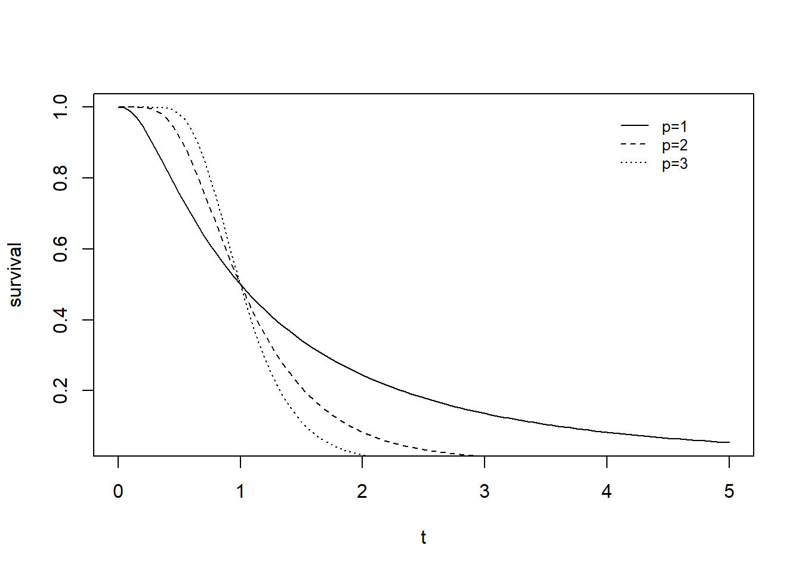
- 앞에서 편의상 치료군만을 대상으로 하였으나, 치료군/대조군 모두에서 생존율을 구하면 다음과 같음
fit=survfit(Surv(time,status)~rx,data=anderson1)
summary(fit)## Call: survfit(formula = Surv(time, status) ~ rx, data = anderson1)
##
## rx=Treatment
## time n.risk n.event survival std.err lower 95% CI upper 95% CI
## 6 21 3 0.857 0.0764 0.720 1.000
## 7 17 1 0.807 0.0869 0.653 0.996
## 10 15 1 0.753 0.0963 0.586 0.968
## 13 12 1 0.690 0.1068 0.510 0.935
## 16 11 1 0.627 0.1141 0.439 0.896
## 22 7 1 0.538 0.1282 0.337 0.858
## 23 6 1 0.448 0.1346 0.249 0.807
##
## rx=Control
## time n.risk n.event survival std.err lower 95% CI upper 95% CI
## 1 21 2 0.9048 0.0641 0.78754 1.000
## 2 19 2 0.8095 0.0857 0.65785 0.996
## 3 17 1 0.7619 0.0929 0.59988 0.968
## 4 16 2 0.6667 0.1029 0.49268 0.902
## 5 14 2 0.5714 0.1080 0.39455 0.828
## 8 12 4 0.3810 0.1060 0.22085 0.657
## 11 8 2 0.2857 0.0986 0.14529 0.562
## 12 6 2 0.1905 0.0857 0.07887 0.460
## 15 4 1 0.1429 0.0764 0.05011 0.407
## 17 3 1 0.0952 0.0641 0.02549 0.356
## 22 2 1 0.0476 0.0465 0.00703 0.322
## 23 1 1 0.0000 NaN NA NAplot(fit)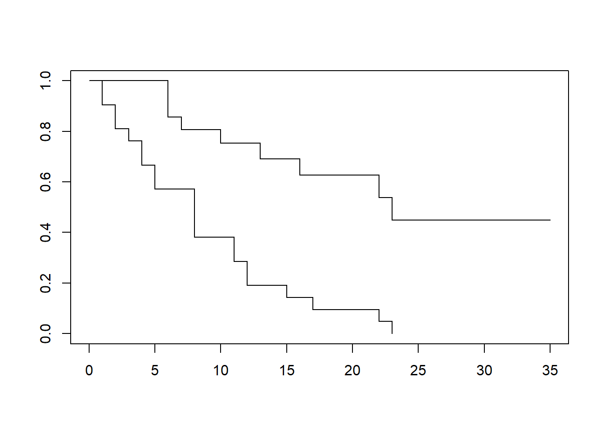
2.1.2.1 Censoring에 대한 논의
- Original data
## Original data
fit1=survfit(Surv(time,status)~1,data=data)
fit1## Call: survfit(formula = Surv(time, status) ~ 1, data = data)
##
## n events median 0.95LCL 0.95UCL
## [1,] 21 9 23 16 NA- Censoring 제거
## Censoring 제거
fit2=survfit(Surv(time,status)~1,data=subset(data,status==1))
fit2## Call: survfit(formula = Surv(time, status) ~ 1, data = subset(data,
## status == 1))
##
## n events median 0.95LCL 0.95UCL
## [1,] 9 9 10 6 NA- Time point 9와 10을 censoring에서 event로 변경
# time=9, 10 에서 censoring을 event로 변경
index <- index <- data$time %in% c(9,10)
data2 <- data
data2$status[index] <- 1
fit3=survfit(Surv(time,status)~1,data=data2)
fit3## Call: survfit(formula = Surv(time, status) ~ 1, data = data2)
##
## n events median 0.95LCL 0.95UCL
## [1,] 21 11 22 10 NAplot(c(0,fit1$time), c(1,fit1$surv), type="s", xlim=c(0,35), ylim=c(0,1), xlab="Time", ylab="Survival Probability")
lines(c(0,fit2$time), c(1,fit2$surv), type="s",col=2)
lines(c(0,fit3$time), c(1,fit3$surv), type="s",col=3)
legend(25,1,c("Original","No Censoring","Mutation"),lty=1, col=1:3)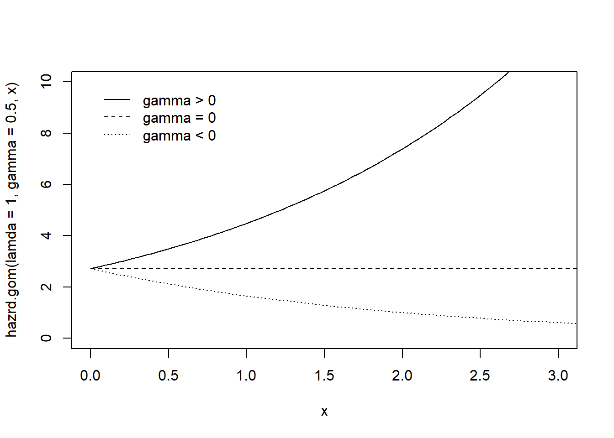
2.1.3 SAS 예제
- Kaplan Meier estimator for the 6 MP data
data one;
input time censor @@;
cards;
6 1 6 1 6 1 7 1 10 1 13 1 16 1
22 1 23 1 6 0 9 0 10 0 11 0 17 0
19 0 20 0 25 0 32 0 32 0 34 0 35 0
;
run;
proc sort data=one; by time censor; run;
proc print data=one; run;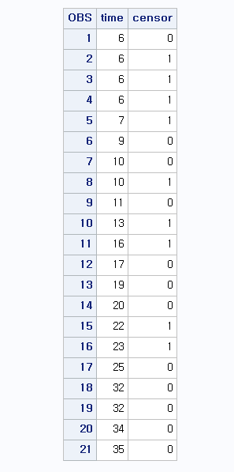
proc lifetest method=KM plots=(S) graphics outsurv=a;
time time*censor(0);
symbol1 v=none;
run;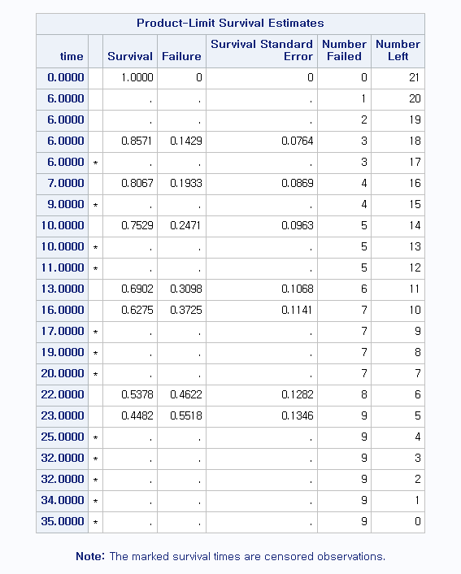
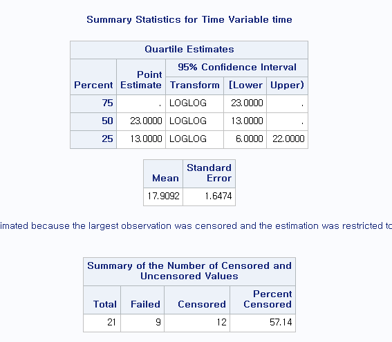
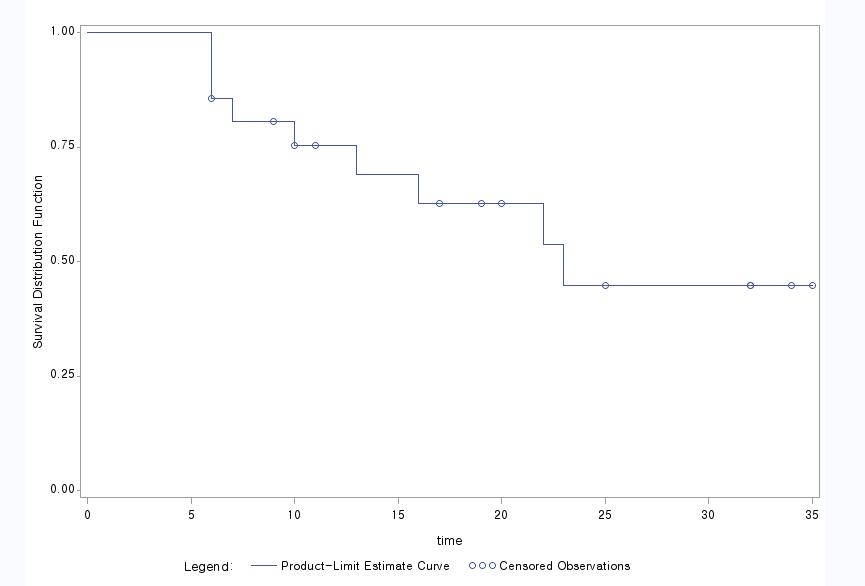
proc print data=a; run;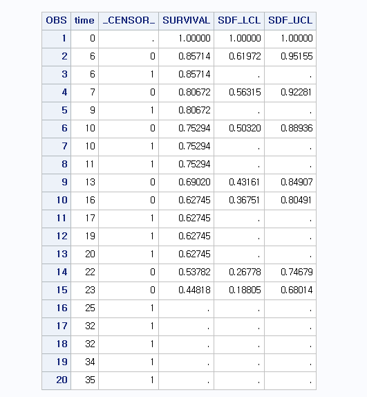
Note
To get confidence intervals around the survival probabilities, you can do using the OUTSURV=option in the PROC LIFETEST option.
OUTSURV= Data Set
- You can specify either the OUTSURV= option in the PROC LIFETEST statement to create an output data set containing the following columns:
any specified BY variables
any specified STRATA variables, their values coming from either their original values or the midpoints of the stratum intervals if endpoints are used to define strata (semi-infinite intervals are labeled by their finite endpoint)
STRATUM, a numeric variable that numbers the strata
the time variable as given in the TIME statement. In the case of the product-limit estimates, it contains the observed failure or censored times. For the life-table estimates, it contains the lower endpoints of the time intervals.
SURVIVAL, a variable containing the survivor function estimates
CONFTYPE, a variable containing the name of the transformation applied to the survival time in the computation of confidence intervals (if the OUT= option is specified in the SURVIVAL statement)
SDF_LCL, a variable containing the lower limits of the pointwise confidence intervals for the survivor function
SDF_UCL, a variable containing the upper limits of the pointwise confidence intervals for the survivor function If the estimation uses the product-limit method, then the data set also contains
CENSOR, an indicator variable that has a value 1 for a censored observation and a value 0 for an event observation If the estimation uses the life-table method, then the data set also contains
MIDPOINT, a variable containing the value of the midpoint of the time interval
PDF, a variable containing the density function estimates
PDF_LCL, a variable containing the lower endpoint of the PDF confidence interval
PDF_UCL, a variable containing the upper endpoint of the PDF confidence interval
HAZARD, a variable containing the hazard estimates
HAZ_LCL, a variable containing the lower endpoint of the hazard confidence interval
HAZ_UCL, a variable containing the upper endpoint of the hazard confidence interval
Each survival function contains an initial observation with the value 1 for the SDF and the value 0 for the time. The output data set contains an observation for each distinct failure time if the product-limit method is used or an observation for each time interval if the life-table method is used. The product-limit survival estimates are defined to be right continuous; that is, the estimates at a given time include the factor for the failure events that occur at that time.
Labels are assigned to all the variables in the output data set except the BY variable and the STRATA variable.
Myelomatosis data
- This data gives survival times for 25 patients diagnosed with myelomatosis. These patients were randomly assigned to two drug treatments as indicated by TREAT variable.
- DUR: the time in days from the point of randomization to either death or censoring(which could occur either by loss to follow up or termination of the observation).
- STATUS: a value of 1 for those who died and 0 for those who were censored
- RENAL: indicator variable for normal (1) versus impaired (0) renal functioning at the time of randomization
data myel;
input dur status treat renal;
cards;
8 1 1 1
180 1 2 0
632 1 2 0
852 0 1 0
52 1 1 1
2240 0 2 0
220 1 1 0
63 1 1 1
195 1 2 0
76 1 2 0
70 1 2 0
8 1 1 0
13 1 2 1
1990 0 2 0
1976 0 1 0
18 1 2 1
700 1 2 0
1296 0 1 0
1460 0 1 0
210 1 2 0
63 1 1 1
1328 0 1 0
1296 1 2 0
365 0 1 0
23 1 2 1
;
run;
proc sort data=myel; by dur status; run;
proc print data=myel; run;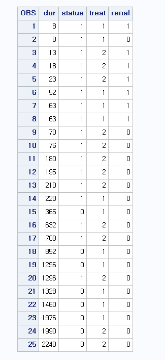
ods graphics on;
proc lifetest data=myel PLOTS=(S,LS,LLS) graphics;
time dur*status(0);
symbol1 v=none;
run;
ods graphics off;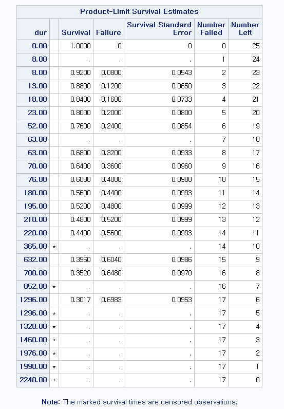
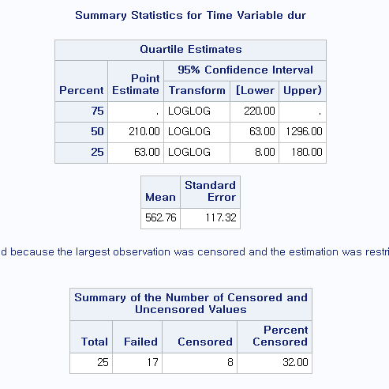
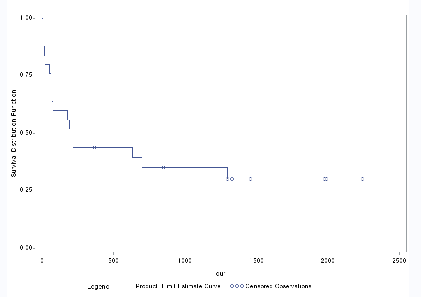
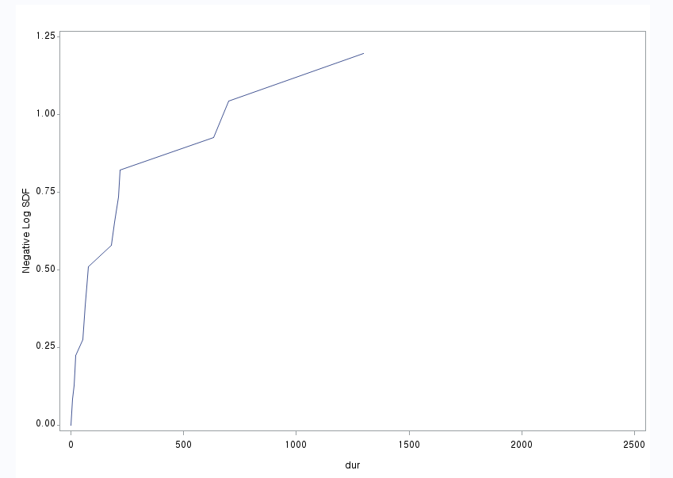
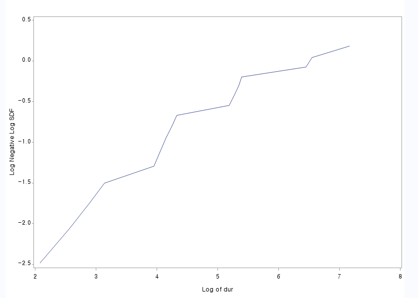
2.2 생명표 방법
환자의 수가 상당히 많을 때에는 그들 개개의 생존시간을 고려하는 대신 생존시간을 몇 개의 구간으로 나누어 생존자료를 요약하는 방법이 필요
보험통계와 같이 데이터의 수집단계에서부터 생존시간이 1년 단위의 구간별로 나뉘어서 주어지는 경우에도 생명표 방법(life table method)이 주로 사용됨
생존시간을 \(k+1\)개의 구간 \([t_{i-1}, t_i), \,\,\, i=1, \ldots, k+1\) 으로 나눔. 이 때 \(t_0=0\)이고 \(t_{k+1}=\infty\)
\(i\)번째 구간의 시작지점에서의 생존자수를 \(n_i\), \(i\)번째 구간에서의 사망자수를 \(d_i\), \(c_i\)는 \(i\)번째 구간에서 중도절단된 인원수
구간 내에서의 생존률 \(p_i=P\)(\(i\)번째 구간에서 내내 생존\(|i\)번째 구간의 시작점에서 생존)\(=P(T>t_i|T>t_{i-1})\), 구간 내 사망률은 \(q_i = 1-p_i\)
생명표의 형태

\(i\)번째 구간의 시작시점에서의 인원수(위험그룹인원수) \(n_i\)는 \(n_i=n_{i-1}-d_{i-1}-c_{i-1}\)이며, 유효인원수(effective sample size) \(n_i'\)는 구간에서의 위험그룹인원수에서 중도절단된 인원수의 \(1/2\)을 뺀 \(n_i'=n_i-c_i/2\)
중도절단이 발생한 경우에는 그룹내내 위험에 노출된 것이 아니라 절반가량 노출되었다고 생각하여 이와 같이 인원수를 조정
\(i\)번째 구간에서의 사망률 \(q_i\)의 추정값은 \(\hat{q}_i=d_i/n_i'\), 생존률 \(p_i\)의 추정값은 \(\hat{p}_i=1-\hat{q}_i=1-d_i/n_i'\)
생존함수
\[ S(t_i)=P(T>t_i) =P(T>t_1)P(T>t_2|T>t_1)\cdots P(T>t_i|T>t_{i-1}) =p_1p_2\cdots p_i \]
- 생존함수 추정 \[ \hat{S}(t_i)=\prod_{k=1}^i \hat{p}_{k}=\prod_{k=1}^i(1-d_k/n_k') \]
이 때 \(\hat{S}(0)=1\)
그린우드의 공식 (Greenwood formula) - 분산 추정량 \[ \hat{Var}(\hat{S}(t_i))=\hat{S}^2(t_i)\sum_{k=1}^i \frac{d_k}{n_k'(n_k'-d_k)} \]
\(100(1-\alpha)\%\) CI
\[ \hat{S}(t_i)\pm z_{1-\alpha/2}\sqrt{\hat{Var}(\hat{S}(t_i))} \]
- Example - Survival of patients with particular form of malignant disease
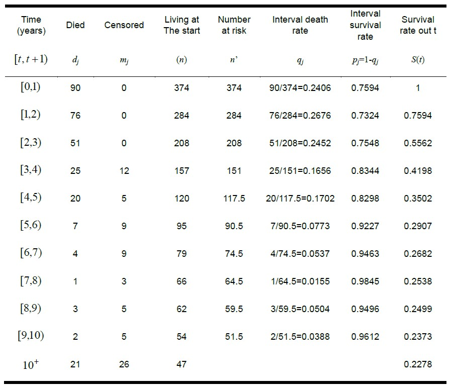
- Survival curve

2.2.1 SAS 예제
- Survival of patients with particular form of malignant disease
data one;
input year failure number @@;
cards;
0.5 1 90
1.5 1 76
2.5 1 51
3.5 1 25 3.5 0 12
4.5 1 20 4.5 0 5
5.5 1 7 5.5 0 9
6.5 1 4 6.5 0 9
7.5 1 1 7.5 0 3
8.5 1 3 8.5 0 5
9.5 1 2 9.5 0 5
10.5 1 21 10.5 0 26
;
run;
proc print data=one; run;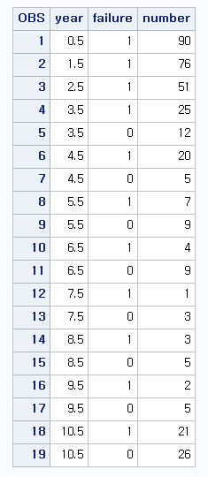
proc lifetest method=LT plot=(S)graphics
intervals=1,2,3,4,5,6,7,8,9,10;
time year*failure(0);
freq number;
run;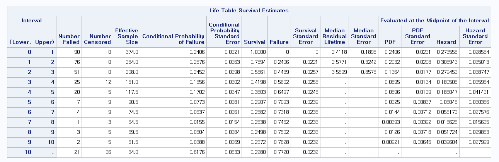
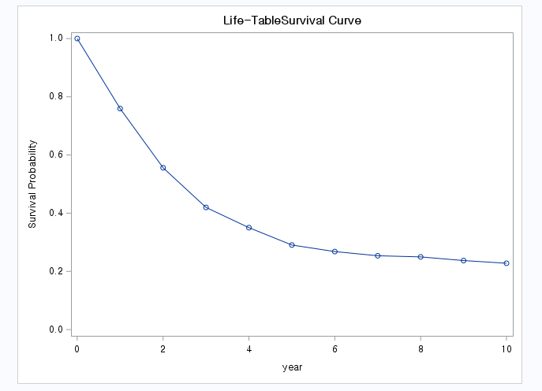
2.3 생존분포 비교
가정
- 첫 번째 그룹의 생존시간 \(T_{11}, T_{12}, \ldots, T_{1n_1}\)은 서로 독립이며 동일한 생존함수 \(S_1\)을 갖고, 중도절단 시간 \(C_{11}, C_{12}, \ldots, C_{1n_1}\)도 서로 독립이며 동일한 분포함수 \(G_1\)을 가짐
- 마찬가지로 두 번째 그룹의 생존시간 \(T_{21}, T_{22}, \ldots, T_{2n_2}\)은 서로 독립이며 동일한 생존함수 \(S_2\)을 갖고, 중도절단 시간 \(C_{21}, C_{22}, \ldots, C_{2n_2}\)도 서로 독립이며 동일한 분포함수 \(G_2\)를 가짐
관측값의 형태
그룹 1: \((x_{11},\delta_{11}), (x_{12},\delta_{12}), \ldots, (x_{1n_1},\delta_{1n_1})\)
그룹 2: \((x_{21},\delta_{21}), (x_{22},\delta_{22}), \ldots, (x_{2n_1},\delta_{2n_2})\)
여기서 \(x_{ij}=min(T_{ij},C_{ij})\)이고 \(\delta_{ij}\)는 중도절단을 나타내는 가변수(\(\delta_{ij}=0\): 중도절단)
특정시점에서의 생존률 비교
가설 \[H_0 : S_1(t_k )= S_2(t_k) \,\,\, vs. \,\,\, H_1 : S_1(t_k) \ne S_2(t_k)\]
검정통계량
\[Z=\frac{\hat{S}_1(t_k)-\hat{S}_2(t_k)}{\sqrt{\hat{Var}(\hat{S}_1(t_k))+\hat{Var}(\hat{S}_2(t_k))}} \sim N(0,1)\]
생존함수의 총괄적 비교
가설 \[H_0 : S_1=S_2 \,\,\, vs. \,\,\, H_1 : S_1 \ne S_2\]
두 생존분포의 비교에 주로 사용되는 기법은 Mantel-Haenszel의 로그 순위 검정법(log-rank test)
\(t_1 < t_2 < \cdots < t_k\)를 두 그룹의 자료를 섞었을 때 관측된 사망시간을 순서대로 놓은 것이라고 하면, 모든 \(t_i\)에서 다음과 같은 \(2\)차원 분할표를 작성함

검정통계량 \[T=\frac{\left( \sum_{i=1}^k (d_{1i}-E_{1i}) \right)^2}{\sum_{i=1}^k V_{1i}} \sim \chi(1)\]
여기서 \(E(d_{1i})=E_{1i}=n_{1i}d_i/n_i\), \(Var(d_{i1})=V_{1i}=\frac{n_{1i}n_{2i}}{n_1-1}\frac{d_i(n_i-d_i)}{n_i^2}\)
로그 순위 통계량은 각 시점에서 동일한 비중을 가짐. 따라서 대안으로 다음과 같은 각 시점의 가중치를 다르게 한 통계량을 고려할 수 있음
\[T=\frac{\left( \sum_{i=1}^k w_i(d_{1i}-E_{1i}) \right)^2}{\sum_{i=1}^k w_i^2V_{1i}} \sim \chi(1)\]
\(w=1\)인 경우 로그 순위 통계량이 됨
\(w_i=n_i\)이면 Gehan의 검정통계량이 되며, 이때 가중값은 각 시점에서 위험에 처해 있는 인원수에 비례함
두 그룹의 위험률의 비가 상수일 때 즉, 교차하지 않을 때 로그 순위 검정법이 선호되며, 그렇지 않은 경우에는 다른 가중치를 주는 방법을 선호
\(k(\ge 3)\)개의 그룹이 모두 동일한 생존분포를 가지는지 알아내기 위한 검정법도 존재. 크루스칼-왈리스 검정법을 중도절단자료의 경우로 확장시킨 형태와 유사
2.3.1 R 예제
2.3.1.1 두 군 간의 KM 생존곡선 비교
로그순위검정(log-rank test)은 2개의 생존곡선이 통계적으로 동등한지를 검정하는 것이며, 2개의 생존곡선을 전체적으로 비교하기 위해 각각의 시간에서 두 군의 기댓값과 관찰값의 차이를 구하여 검정통계량을 계산하는 카이제곱검정의 일종이라고 할 수 있음
autoReg 패키지의 anderson1 데이터를 예로 검정통계량을 구해보자. 먼저 두 군의 비교를 위해 survfit 함수를 이용
fit1=survfit(Surv(time,status)~rx,data=anderson1)
summary(fit1)## Call: survfit(formula = Surv(time, status) ~ rx, data = anderson1)
##
## rx=Treatment
## time n.risk n.event survival std.err lower 95% CI upper 95% CI
## 6 21 3 0.857 0.0764 0.720 1.000
## 7 17 1 0.807 0.0869 0.653 0.996
## 10 15 1 0.753 0.0963 0.586 0.968
## 13 12 1 0.690 0.1068 0.510 0.935
## 16 11 1 0.627 0.1141 0.439 0.896
## 22 7 1 0.538 0.1282 0.337 0.858
## 23 6 1 0.448 0.1346 0.249 0.807
##
## rx=Control
## time n.risk n.event survival std.err lower 95% CI upper 95% CI
## 1 21 2 0.9048 0.0641 0.78754 1.000
## 2 19 2 0.8095 0.0857 0.65785 0.996
## 3 17 1 0.7619 0.0929 0.59988 0.968
## 4 16 2 0.6667 0.1029 0.49268 0.902
## 5 14 2 0.5714 0.1080 0.39455 0.828
## 8 12 4 0.3810 0.1060 0.22085 0.657
## 11 8 2 0.2857 0.0986 0.14529 0.562
## 12 6 2 0.1905 0.0857 0.07887 0.460
## 15 4 1 0.1429 0.0764 0.05011 0.407
## 17 3 1 0.0952 0.0641 0.02549 0.356
## 22 2 1 0.0476 0.0465 0.00703 0.322
## 23 1 1 0.0000 NaN NA NA- 결과를 보면 치료군 21명 중 23주째의 생존율은 0.448이고, 대조군의 23주째 생존율은 0이다. 두 군 간 생존곡선은 다음과 같음
ggsurvplot(fit1,data=anderson1,pval=TRUE)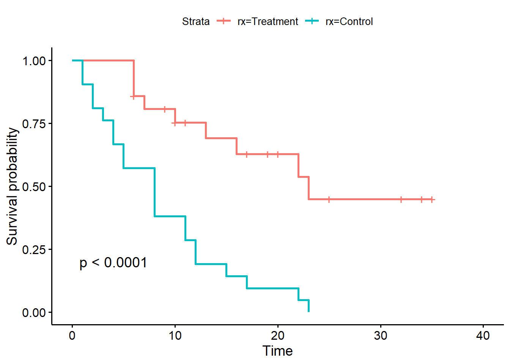
- 그래프에서 보이는 p값이 로그순위검정의 p값으로, 다음과 같은 R 명령어로 구할 수 있음
survdiff(Surv(time,status)~rx,data=anderson1)## Call:
## survdiff(formula = Surv(time, status) ~ rx, data = anderson1)
##
## N Observed Expected (O-E)^2/E (O-E)^2/V
## rx=Treatment 21 9 19.3 5.46 16.8
## rx=Control 21 21 10.7 9.77 16.8
##
## Chisq= 16.8 on 1 degrees of freedom, p= 4e-05- 로그순위검정 통계량은 16.8이며 이 통계량은 자유도 1인 카이제곱분포를 따르고 p값은 매우 낮으므로 두 곡선은 동등하지 않다고 할 수 있음
2.3.1.2 세 군 이상인 경우의 로그순위검정
세 군 이상인 경우의 로그순위검정도 survdiff() 함수를 시행할 수 있음
이때 로그순위검정의 귀무가설은 ’모든 생존곡선이 동등하다’임
예제로 survival 패키지의 대장암 데이터를 사용하며, stage B/C의 대장암 환자 데이터로 관찰군(Obs)과 Lev, Lev+5FU, 세 군의 생존을 비교함
data(cancer,package="survival")
survdiff(Surv(time,status)~rx,data=colon)## Call:
## survdiff(formula = Surv(time, status) ~ rx, data = colon)
##
## N Observed Expected (O-E)^2/E (O-E)^2/V
## rx=Obs 630 345 299 7.01 10.40
## rx=Lev 620 333 295 4.93 7.26
## rx=Lev+5FU 608 242 326 21.61 33.54
##
## Chisq= 33.6 on 2 degrees of freedom, p= 5e-08- 통계량은 33.6(자유도 2)으로 매우 적은 p값을 보임
fit2=survfit(Surv(time,status)~rx,data=colon)
ggsurvplot(fit2,data=colon,pval=TRUE)
2.3.1.3 로그순위검정의 대안
로그순위검정의 대안으로 여러 가지 통계적인 방법들이 제안됨
이 방법들은 통계량을 구할 때 가중치가 주어짐
\[T=\frac{\left( \sum_{i=1}^k w_i(d_{1i}-E_{1i}) \right)^2}{\sum_{i=1}^k w_i^2V_{1i}} \sim \chi(1)\]
Wilcoxon, Tarone-Ware, Peto, Flemington-Harrington 검정등이 알려져 있으며, 방법에 따라 초기 실패에 더 가중치를 주기도 함
가중값에 따른 검정방법
| Test Statistic | 가중값 |
|---|---|
| Log rank | 1 |
| Wilcoxon | \(n_i\) |
| Tarone-Ware | \(\sqrt{n_i}\) |
| Peto | \(s(t_i)\) |
| Flemington-Harrington | \(S(t_i )^p \times (1-S(t_i ))^q\) |
pancreatic2 데이터는 췌장암 환자의 생존에 관한 데이터로 asaur 패키지에 포함되어 있음
데이터에서 pfs는 병기의 진행이 없는 생존(progression free survival)을 나타내며, 병기에 따른 생존곡선을 비교해보고자 함
data(pancreatic2,package="asaur")
survdiff(Surv(pfs)~stage,data=pancreatic2)## Call:
## survdiff(formula = Surv(pfs) ~ stage, data = pancreatic2)
##
## N Observed Expected (O-E)^2/E (O-E)^2/V
## stage=LA 8 8 12.3 1.49 2.25
## stage=M 33 33 28.7 0.64 2.25
##
## Chisq= 2.2 on 1 degrees of freedom, p= 0.1- 로그순위검정에서 국소진행암(locally advanced, LA)과 전이된 암(metastatic, M)의 pfs 생존곡선이 동등하지 않다는 근거는 없다고 할 수 있음
fit4 <- survfit(Surv(pfs)~stage,data=pancreatic2)
ggsurvplot(fit4, data=pancreatic2, pval=T)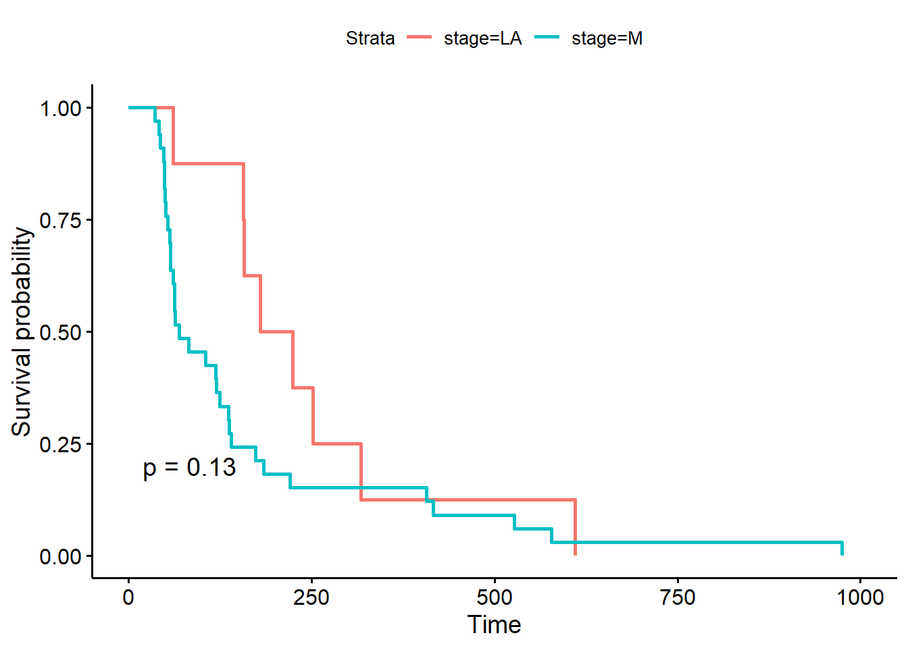
- 이 데이터에서 survdiff( ) 함수에 rho=1로 옵션을 주어 검정하면, Peto의 수정방법으로 검정함
survdiff(Surv(pfs)~stage,data=pancreatic2,rho=1)## Call:
## survdiff(formula = Surv(pfs) ~ stage, data = pancreatic2, rho = 1)
##
## N Observed Expected (O-E)^2/E (O-E)^2/V
## stage=LA 8 2.34 5.88 2.128 4.71
## stage=M 33 18.76 15.22 0.822 4.71
##
## Chisq= 4.7 on 1 degrees of freedom, p= 0.03- 검정 결과 p값은 0.03으로 유의함
- 이 검정방법은 초기 생존시간에 가중치를 주기 때문에 국소진행암이 초기 생존에 유리한 것으로 판단됨
- 생존곡선을 그릴 때 ggsurvplot( )함수의 log.rank.weights 인수를 조절하면 이 값을 그래프에 나타낼 수 있음
ggsurvplot(fit4,data=pancreatic2,pval=TRUE,log.rank.weights="S1")
2.3.1.4 층화된 로그순위검정
두 군 간의 생존곡선을 비교할 때, 다른 공변량을 보정해야 할 경우 층화된 비례위험모형을 사용할 수 있으며, 보정할 공변량의 수준이 적을 때는 층화된 로그순위검정을 할 수 있음
층화된 로그순위검정의 귀무가설은 \(H_{0}: h_{0j}(t)=h_{1j(t)} \,\,\,for \,\,\ j=1,2, \cdots ,G\)
이때 두 번째 변수의 각 수준에 대해 스코어 통계량 \(U_{0g}\)와 분산 \(V_{0g}\)를 계산함
검정통계량
\[ \chi^2 = \frac{(\sum_{g=1}^G V_{0g})^2}{\sum_{g=1}^G V_{0g}^2} \]
치료한 병원, 나이군, 성별 등을 층화할 변수로 사용할 수 있음
assur 패키지의 pharmcoSmoking은 금연 치료로 패치만을 사용한 군과 복합약물치료를 한 군 간의 재발(다시 흡연)까지 걸린 시간에 관한 데이터
data(pharmacoSmoking,package="asaur")
survdiff(Surv(ttr,relapse)~grp,data=pharmacoSmoking)## Call:
## survdiff(formula = Surv(ttr, relapse) ~ grp, data = pharmacoSmoking)
##
## N Observed Expected (O-E)^2/E (O-E)^2/V
## grp=combination 61 37 49.9 3.36 8.03
## grp=patchOnly 64 52 39.1 4.29 8.03
##
## Chisq= 8 on 1 degrees of freedom, p= 0.005fit=survfit(Surv(ttr,relapse)~grp,data=pharmacoSmoking)
ggsurvplot(fit,data=pharmacoSmoking,pval=TRUE,legend=c(0.7,0.85))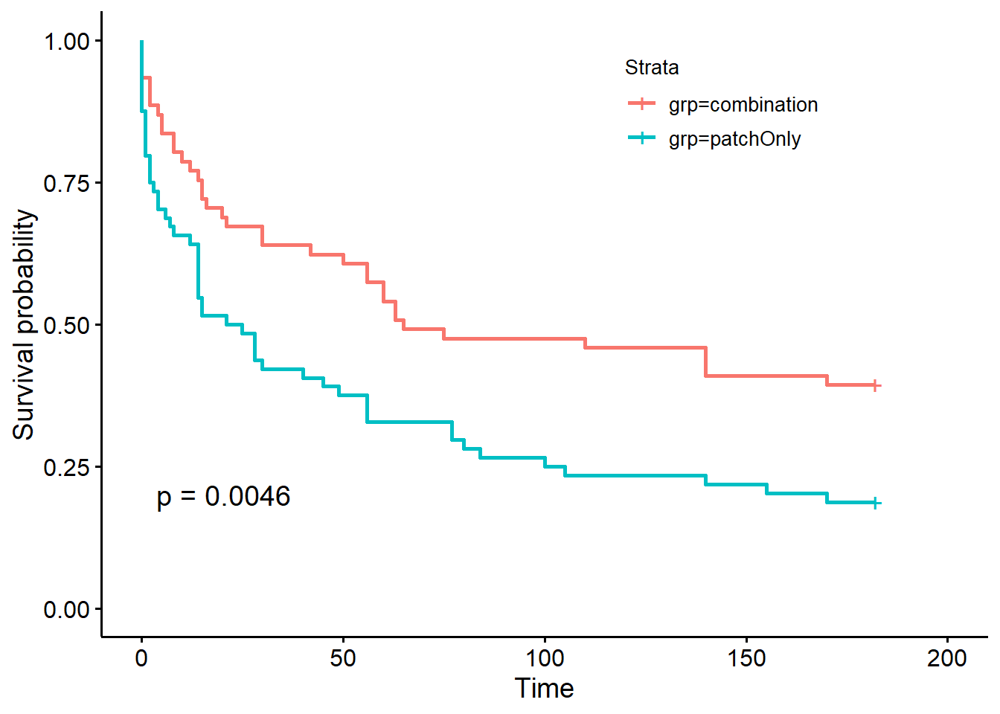
- 이때 나이의 영향을 보정하기 위해 ageGroup2를 사용하여 층화된 로그순위검정을 하면 다음과 같음
survdiff(Surv(ttr,relapse)~grp+strata(ageGroup2),data=pharmacoSmoking)## Call:
## survdiff(formula = Surv(ttr, relapse) ~ grp + strata(ageGroup2),
## data = pharmacoSmoking)
##
## N Observed Expected (O-E)^2/E (O-E)^2/V
## grp=combination 61 37 49.1 2.99 7.03
## grp=patchOnly 64 52 39.9 3.68 7.03
##
## Chisq= 7 on 1 degrees of freedom, p= 0.008labs=c("Comibnation, age 21-49","Combination, age 50+","patchOnly,
age 21-49","patchOnly,age 50+")
ggsurvplot(survfit(Surv(ttr,relapse)~grp+strata(ageGroup2), data=pharmacoSmoking), data=pharmacoSmoking,legend=c(0.7,0.85),legend.labs=labs,pval=T)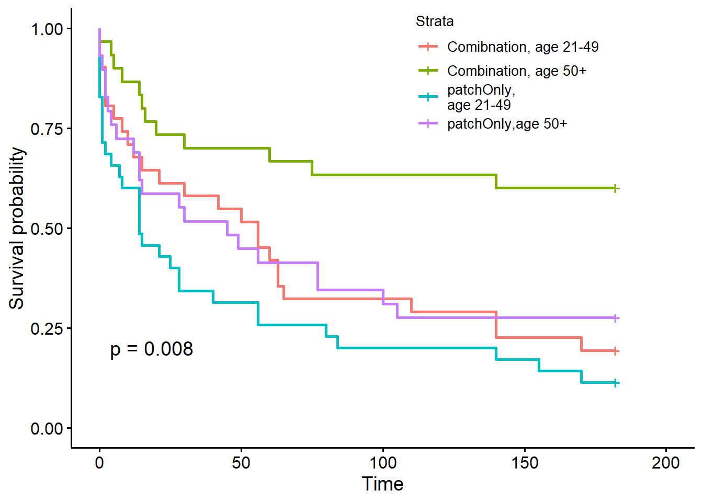
2.3.2 SAS 예제
- Example
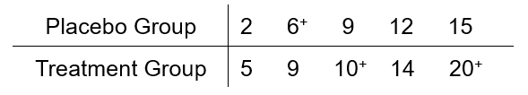
data one;
input time censor group @@;
cards;
2 1 1 6 0 1 9 1 1 12 1 1 15 1 1
5 1 2 9 1 2 10 0 2 14 1 2 20 0 2
;
run;
ods graphics on;
proc lifetest method=KM plots=(s) graphics;
time time*censor(0);
strata group;
symbol1 v=none color=black line=1;
symbol2 v=none color=black line=2;
run;
ods graphics off;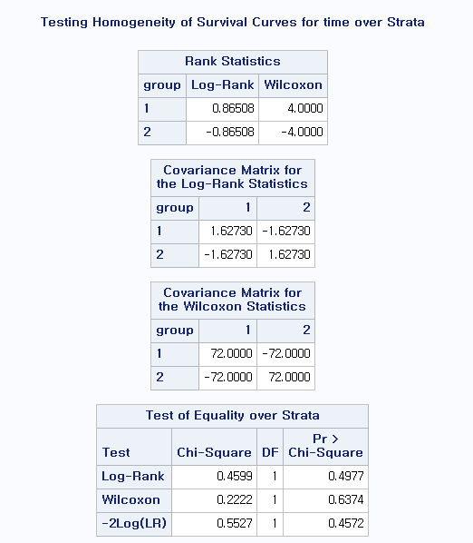
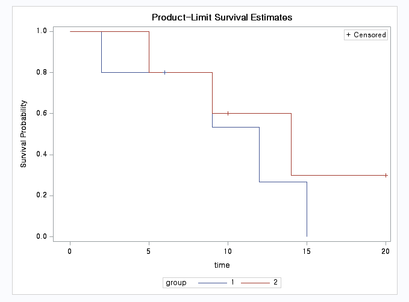
- Log rank test for the 6-MP data
data six_mp;
input time censor group @@;
cards;
6 1 1 6 1 1 6 1 1 7 1 1 10 1 1 13 1 1 16 1 1
22 1 1 23 1 1 6 0 1 9 0 1 10 0 1 11 0 1 17 0 1
19 0 1 20 0 1 25 0 1 32 0 1 32 0 1 34 0 1 35 0 1
1 1 2 1 1 2 2 1 2 2 1 2 3 1 2 4 1 2 4 1 2 5 1 2 5 1 2
8 1 2 8 1 2 8 1 2 8 1 2 11 1 2 11 1 2 12 1 2
12 1 2 15 1 2 17 1 2 22 1 2 23 1 2
;
run;
ods graphics on;
proc lifetest method=KM plots=(s) graphics;
time time*censor(0);
strata group;
symbol1 v=none color=black line=1;
symbol2 v=none color=black line=2;
run;
ods graphics off;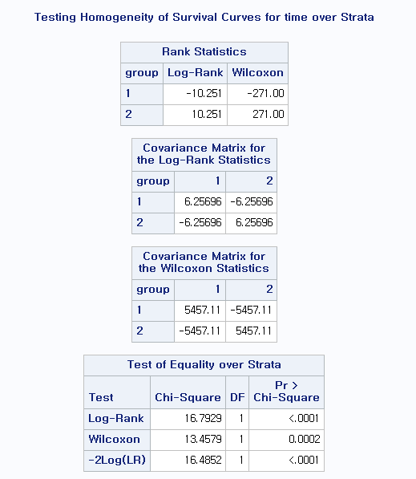